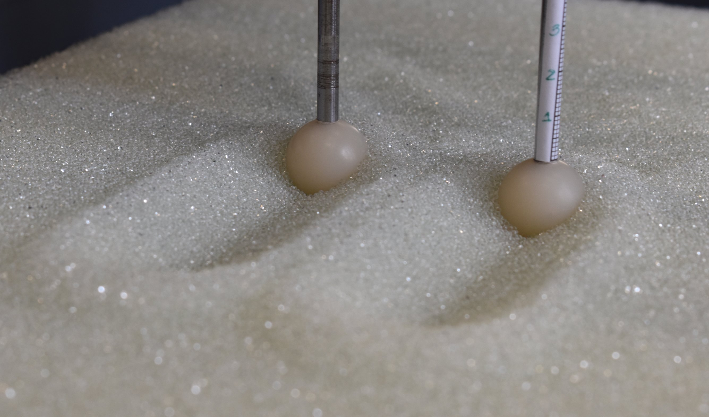
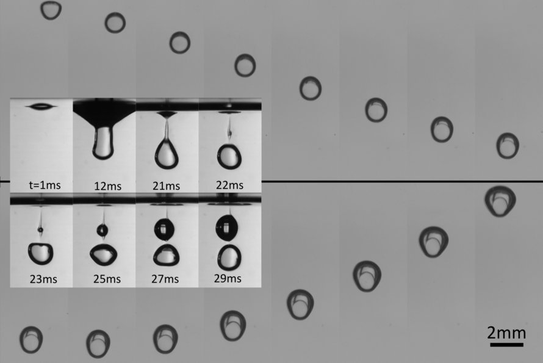
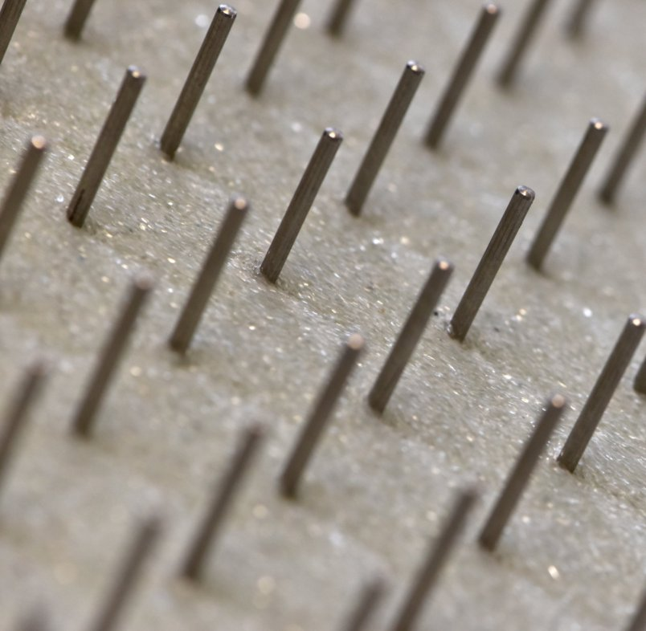

Baptiste Darbois Texier
CNRS Researcher at FAST Laboratory (UMR 7608), Paris-Saclay University
Contact
- baptiste.darbois-texier[at]universite-paris-saclay.fr
- baptiste.darbois-texier[at]cnrs.fr
Thematics
The soil on our planet is an extremely heterogeneous material, made up of particles that vary greatly in size, shape and composition. This collection of particles can be described as granular, whether in dry or wet conditions. When the climate changes, soils can exhibit critical behaviours such as landslides, mudslides and avalanches. Soils are also unique eco-systems for the many living organisms that burrow beneath the surface and move through them. Preventing the risks associated with geophysical events and preserving soils requires an in-depth understanding of the behaviour of granular media.Our work focuses on the mechanics of these granular materials, which are made up of an assembly of solid grains, and on the effect of various factors influencing their macroscopic responses, such as the presence of fluids, capillary bridges or fibres in the interstices between the grains. These materials are used as model systems to study soil behaviour in the laboratory. In practice, we characterise the macroscopic response of these materials using model experiments and interpret our observations using concepts from the field of soft matter. This approach is essential for developing new strategies for reinforcing soils with fibres in order to combat erosion, as well as for gaining a deeper understanding of the interactions between organisms living beneath the surface and soil properties. To this end, we are developing bio-inspired robots and studying their behaviour in granular materials, which represents a major challenge in robotics.
Research topics
- Granular media (Flow, Rheology, Locomotion)
- Fluid Mechanics (Capillarity, Wetting, Dense Suspensions, Complex Fluids)
- Elasticity of slender structures (Fibres, Hydrogels, Impacts)
Recent publications
- Drag reduction during the side-by-side motion of a pair of intruders in a granular medium
Carvalho, D. D., Bertho, Y., Seguin, A., Franklin, E. M., Darbois Texier, B. Physical Review Fluids 9(11), 114303 (2024).
[Link| PDF]

- Thermal Antibubbles: When Thermalization of Encapsulated Leidenfrost Drops Matters
Miguet, J., Scheid, B., Maquet, L., Texier, B. D., & Dorbolo, S. Physical Review Letters 131(18), 184001 (2023).
[Link| PDF]

- Downslope granular flow through a forest of obstacles.
Darbois Texier, B., Bertho, Y., & Gondret, P., Physical Review Fluids 8(3), 034303 (2023).
[Lien| PDF]

- Penetrating a granular medium by successive impacts.
Seguin, A., Bertho, Y., & Darbois Texier, B. Physical Review E 105(5), 025803 (2022).
[Lien| PDF]
Communication
- Cooperation between two intruders moving side-by-side in granular media
Phys.org (28/12/2024) [Lien]
- Antibubbles: Finally a reliable way to create them
@SabineHossenfelder (11/12/2023) [Lien]
- Researchers describe the journey of thermal antibubbles in a hot bath
Phys.org (27/11/2023) [Lien]
- La Matière Molle
le_prof_de_physique, Fabien Bornes (06/11/2023) [Lien]
- Forest of cylindrical obstacles' slows avalanche flow
Physics World (05/05/2023) [Lien]
- How forest density slows granular flows
Phys.org (11/04/2023) [Lien]
- Making waves without inertia
Nature Reviews Physics, Research highlights (06/01/2021) [Lien]
Teaching
- Experimental Methods in Fluid Mechanics for the Master 1 in Mechanics at Paris-Saclay.
- Supervision of robotics projects at Ecole Centrale-Supelec (1st and 2nd year students).
Community involvement
- President of the Condensed Matter Physics Division of the Société Francaise de Physique (SFP)
[Lien].
- Co-organiser of the FAST laboratory seminars [Lien].
- Co-organiser of the session on "Model approaches for Earth sciences" at the 27th SFP General Congress (30 June - 4 July 2025) [Lien].
- Co-organiser of the "Physics of Divided Matter" mini-conference for the Condensed Matter Days 2024 in Marseille (28-31 October 2024) [Lien].
- Co-organiser of the Soft Matter mini-conference for the 26th SFP General Congress (3-7 July 2023) [Lien].
Projects
- 2024-2029: TOTEM (Transformation Of TEsting Machine), Appel à projet 2024 de l'axe PhOM de la Graduate School de Physique de l'Université Paris Saclay.
- 2023-2027: FiLiGran (Mechanics of Fiber-interLinked Granular materials), ANR JCJC 2022. [Lien]
- 2022-2023: ERGbotS (Effet de la perception sensorielle et de la Rétroaction sur un substrat Granulaire
pour un robot Serpent), PEPS INSIS 2022.
Collaborations
Loic Tadrist (Université Aix-Marseille), Francisco Melo (USACH, Santiago), Stéphane Dorbolo (ULiege, Belgique), Tadd Truscott (Utah State University), José Bico (PMMH, Paris), Philippe Brunet (MSC, Paris), Sergio Palma (USM, Santiago), Johann Herault (LS2N, Nantes).